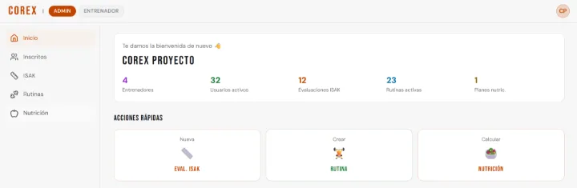
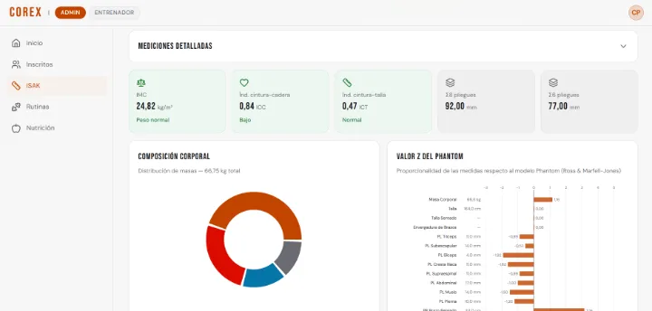
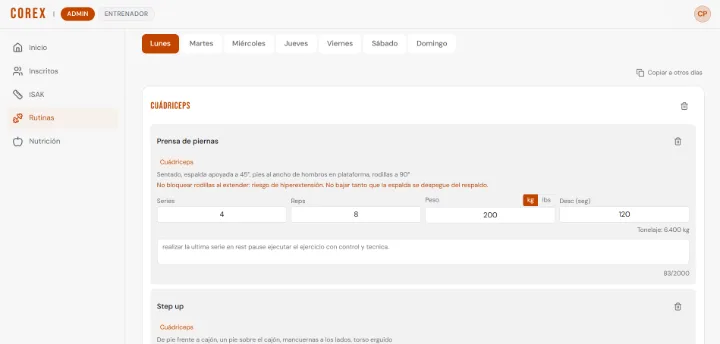
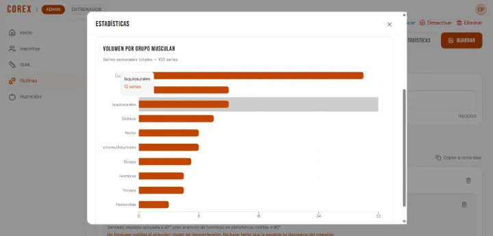
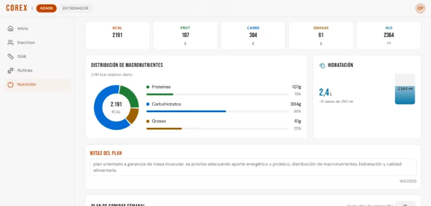
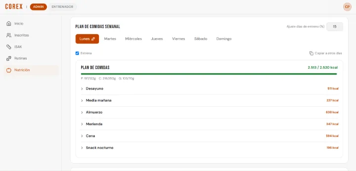

Corex
Gestión deportiva para entrenadores: evalúan a sus atletas con antropometría ISAK y les prescriben rutinas y planes nutricionales.
Calcula la composición corporal al guardar cada evaluación, prepara un informe narrativo opcional con IA que el entrenador revisa antes de publicarlo, y a cada atleta le muestra solo lo suyo. Funciona en la web y en una app Android.
- Estado
- En producción · en uso
- Periodo
- Abr 2026 – presente
- Rol
- Proyecto independiente, hecho para negocios de amigos
Qué es
Corex es una plataforma web de gestión deportiva, con una app Android que la envuelve.
- El entrenador evalúa a sus atletas con antropometría ISAK, el protocolo internacional de medición corporal, y el sistema calcula los resultados al guardar.
- Con cada evaluación puede generar un informe narrativo con IA, que revisa antes de publicarlo.
- Les prescribe rutinas de entrenamiento y planes nutricionales.
- El atleta consulta lo suyo.
- La administración aprueba los accesos, reasigna entrenadores y supervisa la operación.
Quién lo usa y qué ve cada uno
- Atleta: ve su inicio con la última evaluación (IMC, % de grasa y masa muscular), su rutina activa y su plan con calorías y macronutrientes. Ve sus evaluaciones, y cada informe solo cuando su entrenador lo publica. Edita sus datos básicos, pero no las notas del entrenador, y puede pedir cambio de entrenador.
- Entrenador: ve solo a sus atletas activos, y solo a ellos les crea evaluaciones, informes, rutinas y planes; al terminar la relación conserva la lectura de lo que creó. Invita atletas, que entran activos, e invita entrenadores, que quedan pendientes de aprobación. Aprueba a quienes se registran eligiéndolo, desactiva atletas y pide cambios de entrenador.
- Analista: parte de un acceso mínimo; el administrador le da permisos de lectura o escritura por módulo (atletas, evaluaciones, rutinas, nutrición, actividad y catálogos). No crea evaluaciones, rutinas ni planes. Con permiso de escritura edita atletas y resuelve cambios de entrenador, salvo los que pidió él.
- Administrador: control total. Aprueba entrenadores, asigna roles (sin poder quitarse el suyo), otorga permisos de analista y reasigna entrenadores. Es el único que puede tomar el bloqueo de edición de un atleta, y ve Indicadores, Actividad, Accesos y Catálogos.
- Una persona puede tener varios roles y elige con cuál trabaja. Cambiar de rol solo puede reducir permisos, nunca ampliarlos.
Qué registra
- Evaluación ISAK (el objeto principal): fecha, antropometrista, deporte, edad, sexo, medidas básicas, pliegues cutáneos, perímetros y diámetros, con las tomas crudas. Al guardar, el servidor calcula IMC, índices cintura-cadera y cintura-talla con su nivel de riesgo, sumatorias de pliegues, % de grasa, masas muscular, ósea, adiposa y residual, somatotipo Heath-Carter y el perfil de proporcionalidad. La editan su autor, mientras siga siendo el entrenador activo, o el administrador.
- Informe ISAK: uno por evaluación, con siete secciones (Síntesis, Composición corporal, Somatotipo y proporcionalidad, Riesgo y salud, Impacto en tu rutina, Impacto en tu nutrición, y Conclusiones y próximos pasos) más las notas del entrenador. Estados: generando → listo o error; la publicación va aparte. Regenerarlo reemplaza el anterior y le quita la publicación.
- Rutina: objetivo, nivel, días por semana, jornada, lugar e implementos; por día, bloques por grupo muscular, y en cada uno ejercicios con series, repeticiones, peso, descanso, técnica, consejos y video. Estados: activa o inactiva.
- Plan nutricional: calorías, proteínas, carbohidratos, grasas, hidratación, ajuste para días de entreno, restricciones y preferencias, y un menú semanal. Estados: activo o inactivo, con un solo plan activo por atleta: crear uno nuevo desactiva el anterior.
- Persona: identidad con perfiles demográfico, de salud, de participación, deportivo (con las notas del entrenador) y profesional (con el nivel ISAK del entrenador). Estados: pendiente → activa o rechazada; activa → inactiva. Solo una cuenta activa inicia sesión.
- Relación entrenador–atleta: una sola vigente por atleta, con historial.
- Solicitud de cambio de entrenador: pendiente → aprobada, rechazada o cancelada; una pendiente por atleta.
- Catálogos: generales, alimentos con macronutrientes por porción y ejercicios por grupo muscular.
Cómo funciona
Acceso
Con un código que llega por correo. La respuesta es la misma exista o no la cuenta: solo una cuenta activa recibe el código, y una pendiente, rechazada o inactiva recibe en cambio un correo que explica su estado.
Alta de un atleta
Por invitación del entrenador, y queda activo con su relación; o por registro público, eligiendo entrenador y aceptando el tratamiento de datos, y queda pendiente hasta que su entrenador o el administrador lo aprueba. Después completa su perfil por pasos y acepta el consentimiento.
Alta de un entrenador
Por registro público o por invitación de otro entrenador queda pendiente, y se avisa a los administradores; si lo invita un administrador, queda activo.
Evaluación ISAK
- El entrenador elige al atleta; edad, sexo y deporte se precargan, y la pantalla dice de dónde salió cada dato.
- Registra las mediciones, y el sistema pide otra toma cuando dos no coinciden.
- Al primer cambio toma el bloqueo del atleta y la pantalla se va guardando como borrador.
- Al guardar, el servidor valida, comprueba el acceso y el bloqueo, y calcula.
- Los resultados se ven en gráficas (composición, riesgo, somatocarta y proporcionalidad), y dos evaluaciones se comparan con sus diferencias y su evolución.
Informe con IA
- El entrenador abre «Generar informe» y marca la casilla que autoriza la interpretación asistida por IA, que viene desmarcada.
- Sin la casilla, el informe sale solo con datos y gráficas.
- Con ella, el motor trabaja en segundo plano y la pantalla muestra en palabras la etapa en que va.
- El entrenador lo revisa y pulsa «Publicar al usuario»; solo entonces el atleta lo ve. Se imprime o se guarda en PDF.
Rutina
Un asistente por pasos: atleta, configuración, días con ejercicios del catálogo y resumen. Después se edita por día, se duplica a otro atleta o se desactiva, y muestra estadísticas: ejercicios, series, repeticiones, tonelaje, tiempo estimado y músculos trabajados.
Plan nutricional
El sistema estima el gasto en reposo (con la masa libre de grasa de la última evaluación ISAK, si existe) y el gasto total según la actividad, y propone calorías y macronutrientes según el objetivo. El entrenador arma el menú semanal, con el ajuste para días de entreno. El % de grasa lo lee el servidor de la base de datos, no lo que envía la pantalla.
Cambio de entrenador
- Lo piden el atleta o su entrenador, con un motivo.
- Lo resuelve el administrador o un analista con permiso, nunca quien lo pidió.
- Al aprobarse, la relación cambia en una sola operación y se avisa por correo a los afectados.
- El administrador también puede reasignar directamente.
Catálogos
Crear, editar, activar o desactivar; importar desde CSV y exportar a CSV o Excel.
Pantallas
- Barra lateral: Inicio, Inscritos, ISAK, Rutinas y Nutrición, según el rol.
- Inicio del entrenador: atletas activos, evaluaciones, rutinas activas y planes; accesos rápidos y personas recientes. El administrador ve además el aviso de indicadores.
- Inscritos: lista con búsqueda y filtros, invitaciones, solicitudes de acceso y de cambio de entrenador, y la ficha de cada persona.
- ISAK: asistente, detalle con gráficas, informe y comparación.
- Rutinas y Nutrición: asistente y editor.
- Del administrador: Indicadores, Actividad, Accesos (la matriz de permisos por rol y pantalla) y Catálogos.
- De todos: perfil y configuración (tema claro u oscuro).
- Públicas: ingreso, registro de atleta y de entrenador, y completar el perfil.
Operación: motor del informe, correos y avisos
Motor del informe con IA
Corex no usa bots de Telegram. Su motor de análisis son cinco agentes de IA en cadena:
| # | Agente | Qué hace |
|---|---|---|
| 1 | Intérprete antropométrico | Composición, somatotipo, proporcionalidad, riesgo y salud |
| 2 | Preparador físico | Enfoques de entrenamiento, sin series, repeticiones, cargas ni plazos |
| 3 | Orientador en nutrición deportiva | Orientación cualitativa, sin calorías, gramos ni suplementos; cierra diciendo que el plan lo define un profesional |
| 4 | Verificador, con un modelo distinto | Comprueba que nada contradiga los números ni identifique a la persona, y quita prescripciones, invenciones, frases genéricas y afirmaciones sobre lo no medido |
| 5 | Formateador | Ordena el texto verificado en las siete secciones |
- Solo recibe datos anonimizados: sexo, edad, peso, talla y el cálculo. Nunca nombre, correo, documento, rutina ni plan. Lo que falta se marca como no disponible, con la orden de no inferirlo.
- Las notas del entrenador viajan como datos, no como instrucciones: se limpian de datos personales, van entre marcadores que cambian en cada solicitud y, si la respuesta las copió, se rechaza.
- Estilo: cada afirmación se ancla en un dato, las inferencias se marcan como tales y el informe aclara que es orientación general, no el juicio de un profesional.
- Fallos: si falta una sección, el informe queda en error y no se guarda a medias; el entrenador ve un mensaje claro y el detalle técnico queda en los registros. Si el modelo principal falla, reintenta y pasa a uno de reserva, y el informe muestra qué modelo respondió por cada agente.
- Límites: de frecuencia en la app y en el motor, y un solo informe generándose por evaluación.
Correos y avisos
| Disparador | Mensaje | Quién lo recibe | Para qué |
|---|---|---|---|
| Ingreso con una cuenta activa | Código de acceso | La persona | Entrar |
| Ingreso con una cuenta no activa, o registro con un correo ya usado | Aviso de su estado o del intento, con límite de frecuencia | La persona | Saber qué pasa sin revelarle nada a un tercero |
| Registro o invitación de un entrenador | Nueva solicitud de acceso | Los administradores | Aprobar o rechazar |
| Invitación o reenvío del enlace | «Completa tu perfil» | La persona invitada | Entrar y completar |
| Aprobación o rechazo | El resultado | La persona | Entrar |
| Solicitud de cambio de entrenador | Atleta, solicitante, entrenador propuesto y motivo | Los administradores | Resolver |
| Cambio resuelto o reasignación directa | «Cambio de entrenador» | Solicitante, atleta y entrenadores anterior y nuevo | Enterarse |
- Si un correo falla, la operación no se deshace y el fallo queda registrado.
- Aviso en el inicio del administrador cuando un indicador está en crítico o en atención.
- Tareas programadas: purga periódica de la bitácora antigua y respaldo diario.
Indicadores (panel del administrador)
- Por servicio: tamaño de la base, tareas programadas, errores del sistema por módulo, informes de IA colgados o en error, respaldo y prueba de restauración, y consumo de los servicios externos.
- De operación: accesos por aprobar y cambios de entrenador pendientes, con la antigüedad del más viejo; perfiles incompletos; personas.
- Cada tarjeta tiene un estado (crítico, atención, en orden) con umbrales, y las personas de demostración no cuentan.
Controles
- Acceso: reglas en la base de datos en todas las tablas, que se activan solas en las tablas nuevas; columnas protegidas (las notas del entrenador y los datos sensibles de la persona); cada acción del servidor identifica a la persona desde su sesión, y una regla del control de cambios lo comprueba; y la pantalla no ofrece lo que el servidor va a rechazar.
- Cuatro ojos: quien pide un cambio de entrenador no lo resuelve.
- Edición concurrente: un bloqueo por atleta que el servidor hace cumplir en cada escritura, y detección de conflicto si otra persona guardó después.
- Seguridad web: protección contra solicitudes falsificadas, política de contenido y cabeceras de seguridad; el ingreso y el registro no revelan si una cuenta existe; validación en tres capas (pantalla, servidor y base de datos) con los mismos topes; exportaciones protegidas contra inyección de fórmulas; y límites de frecuencia por acción.
- Datos personales: consentimiento de tratamiento obligatorio al registrarse y al completar el perfil, que no se puede modificar ni borrar; consentimiento de IA por informe; y anonimización antes de cualquier envío a la IA.
- Humano en el bucle: el atleta no ve ningún informe hasta que el entrenador lo publica, y eso lo hace cumplir la base de datos.
- Auditoría: la bitácora la escribe el servidor; la ven el administrador, el analista con permiso o el propio dueño, y se conserva por un tiempo limitado.
- Control de cambios: las mismas verificaciones en cada commit y en la integración continua (reglas del repositorio, tipos, estilo, pruebas y build); el push a la rama principal se bloquea si la última integración quedó en rojo.
- Respaldos: diarios y cifrados, con conteo de filas por tabla; una prueba de restauración semanal en un entorno aparte; el resultado queda registrado sin datos personales.
Integraciones
- Supabase: base de datos, ingreso por código, funciones y tareas programadas.
- Google Gemini: solo el informe ISAK.
- Correo (Gmail, SMTP): los correos de la app. El código de acceso lo envía el servicio de autenticación.
- Vercel: aloja la web.
- Capacitor: la app Android.
- GitHub Actions: integración continua y respaldo.
Capturas de pantalla
Toca una imagen para verla completa.

Inicio del administrador: entrenadores, usuarios activos, evaluaciones, rutinas y planes, y accesos rápidos. 
Evaluación ISAK: IMC, índices de riesgo, composición corporal y perfil de proporcionalidad. 
Rutina: ejercicios por día con series, repeticiones, peso, descanso y notas. 
Estadísticas de la rutina: series semanales por grupo muscular. 
Plan nutricional: calorías, macronutrientes e hidratación. 
Menú semanal: las comidas del día con sus calorías, frente al objetivo.


Detalles técnicos
Stack
- Next.js 14 (App Router)
- React 18
- TypeScript
- Tailwind CSS
- Zod
- Recharts
- SheetJS
- Supabase (PostgreSQL, Auth, pg_cron)
- Edge Functions (Deno)
- Google Gemini
- nodemailer
- Vercel
- Capacitor (Android)
- Vitest
- GitHub Actions
Cifras
- 25 tablas, todas con políticas de acceso (72 políticas); 25 funciones, 37 índices, 15 triggers y 86 restricciones de longitud.
- 490 pruebas en 38 archivos; 19 reglas en el control de cambios; 28 páginas; 55 tipos de acción en la bitácora.
Detalles de operación
- Mediciones: medidas básicas, 8 pliegues, 6 perímetros y 3 diámetros; hasta 3 tomas por medida (promedio de 2 o mediana de 3); se pide la tercera si la diferencia supera el 5 % en pliegues o el 1 % en lo demás.
- Fórmulas: % de grasa de Faulkner y Carter; masa muscular de Lee (2000), ósea de Rocha (1975) y adiposa de Kerr (1988); Z-scores con el modelo Phantom.
- Nutrición: gasto en reposo con Cunningham (si hay evaluación ISAK) o Mifflin-St Jeor; factores de actividad de 1,2 a 1,9; calorías objetivo entre −25 % y +20 %; proteína de 1,8 a 2,2 g/kg y carbohidratos de 3 a 10 g/kg; la grasa completa entre el 20 y el 35 %; hidratación de 35 ml/kg más un extra por actividad.
- Modelos del informe: principal gemini-3.1-flash-lite, de reserva gemini-2.5-flash-lite y verificador gemini-2.5-flash; temperatura 0,4 en los tres primeros agentes, 0 en el verificador y 0,3 en el formateador.
- Motor del informe: 2 intentos por modelo con espera creciente y 5 segundos entre agentes; la app espera hasta 15 segundos a que el motor acepte el encargo y ofrece reintentar a los 7 minutos; límites de 5 solicitudes por minuto en la app y 20 por minuto por IP en el motor; notas del entrenador hasta 2.000 caracteres; de los Z-scores solo van los que pasan de ±2; el verificador aplica 8 reglas.
- Acceso: código de 6 dígitos, válido 10 minutos; respuesta mínima de 1,5 segundos; avisos de estado como máximo 1 cada 10 minutos.
- Edición: el bloqueo vence a los 2 minutos sin señal o a los 15 sin cambios; el borrador se guarda 2 segundos después de cada cambio y vence a los 14 días.
- Bitácora: 12 meses; se purga el día 1 de cada mes.
- Respaldo: a las 03:17, hora de Colombia; prueba de restauración los domingos; se conserva cifrado 30 días.
- Catálogos: 366 ítems de 34 tipos, 94 alimentos y 100 ejercicios en 14 grupos musculares.
Cómo construyo: defino el problema, los requisitos, el modelo de datos y los controles; implemento con asistentes de IA (Claude Code) bajo mi dirección, y cada cambio pasa pruebas automáticas y mi revisión antes de publicarse.
El código es privado porque contiene reglas de negocio y datos del cliente. Puedo recorrerlo en vivo: código, pruebas y despliegue.